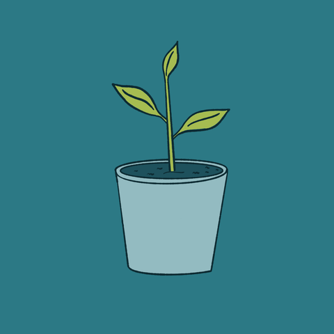
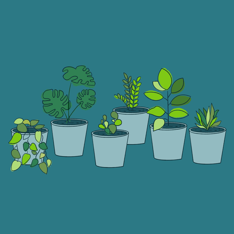

O Nas
Jesteśmy grupą młodych, ambitnych studentów patrzących z nadzieją w przyszłość, którą chcemy tworzyć. Zebraliśmy się razem w ramach zajęć Kliniki Kariery prowadzonych przez Biuro Karier UW przy naszym Uniwersytecie. Pochylając się wspólnie nad wyzwaniami jakie stoją przed wchodzącymi w dorosłość młodymi ludźmi zauważyliśmy potrzebę uporządkowania, nazwania i sklasyfikowania materiałów powszechnie dostępnych ułatwiających im ten proces, jednak faktycznie często przed nich nie odkrytych. Tak zrodził się pomysł naszego projektu, o którym chcielibyśmy opowiedzieć wam trochę więcej poniżej.

Jednak zanim o projekcie, chcielibyśmy krótko przedstawić wam nasz dream team:
- Marek Jóźwiak
Student UW na kierunku socjologia. Po godzinach producent muzyczny. W projekcie odpowiadał za redagowanie i testowanie produktu. - Kornelia Pipka
Studentka wydziału zarządzania. Kiedy znajdzie wolny czas oddaje go ludziom, znajomym, szczególnie lubiąc poświęcać długie wieczory na jeszcze dłuższe rozmowy. W projekcie podjęła się analizy testów produktu oraz pracy nad poszczególnymi grafikami. - Mikołaj Pluciński
Student Uniwersytetu Warszawskiego o specjalności Rynek kapitałowy i doradztwo inwestycyjne. Człowiek - analityk, którego świat sprowadza się do cyferek. W projekcie zajął się researchem oraz wstępną analizą materiałów zamieszczonych na stronie. - Monika Saj
studentka Wydziału Zarządzania i Wydziału Psychologii UW. W projekcie była odpowiedzialna za merytoryczne opracowanie treści umieszczonych na stronie internetowej. W wolnym czasie lubi tańczyć i podróżować w odległe zakątki świata. - Paweł Stasiak
Student Uniwersytetu Warszawskiego na kierunku Architektura przestrzeni informacyjnych. W wolnym czasie pochłania go muzyka. W projekcie podjął się współtworzenia strony internetowej. - Anna Warno
Studentka UW na kierunku matematyka. Z ogromną przyjemnością wdaje się we wszelkiego rodzaju gru słowne. W projekcie podjęła się utworzenia strony i testowania produktu.
O PROJEKCIE
Bardzo wierzymy, że każdy ma w sobie bardzo duży potencjał. Tym, co często utrudnia jego odkrycie i realizowanie tego jest fakt, że każdy z nas jest inny i ukryty w nas potencjał i ścieżki jego realizacji zupełnie się różnią. Będąc młodymi ludźmi, często życie nie daje nam wystarczającej ilości okazji do zweryfikowania tych różnic i odkrycia swojego wnętrza, nie rodzimy się również z dołączoną instrukcją obsługi.

Próbując jakoś zobrazować ten stan rzeczy wyobraziliśmy sobie roślinki, które na początkach swojego wzrostu, na etapie ziarenka, często wydają się nam do złudzenia podobne. Ciężko jest nam w tym małym brązowym kamyczku zobaczyć potencjał dużej, dumnie kwitnącej rośliny. Równie ciężkim wydaje się rozpoznanie, jak będzie ona wyglądała w przyszłości, a zatem też w jakich warunkach rozwinie się najlepiej. Czy potrzebuje więcej słońca, czy mniej, jak częstego nawadniania, ile miejsca w doniczce, jaki rodzaj gleby i masę innych uwarunkowań. Podobnie jest z młodymi ludźmi którzy na początku często nie mają pojęcia jaki drzemie w nich potencjał oraz w jakich warunkach najłatwiej będzie go osiągnąć. Dlatego gubimy się często, szukamy odpowiedzi w zupełnie kosmicznych dla nas miejscach i często wysuszymy kwiatka na jakiś czas, bądź liście mu zżółkną. Dlatego chcieliśmy wyjść naprzeciw i zaproponować naszą stronę - miejsce, gdzie zebraliśmy bazę testów, narzędzi które mogą ułatwić rozpoznanie siebie, swoich cech i swojego potencjału oraz zasugerować kierunki i warunki jak najlepszego rozwoju. Wiadomo, że jest to jedynie narzędzie ułatwiające rozpoznawanie, a nie złoty środek na życie podany na tacy, natomiast głęboko wierzymy, że może ono faktycznie (czasem dopiero z pomocą ogrodnika - specjalisty zawodowego) pomóc zidentyfikować cechy i potencjał młodych ludzi oraz potrzebne wsparcie w nadawaniu kierunku naszemu wzrostowi.